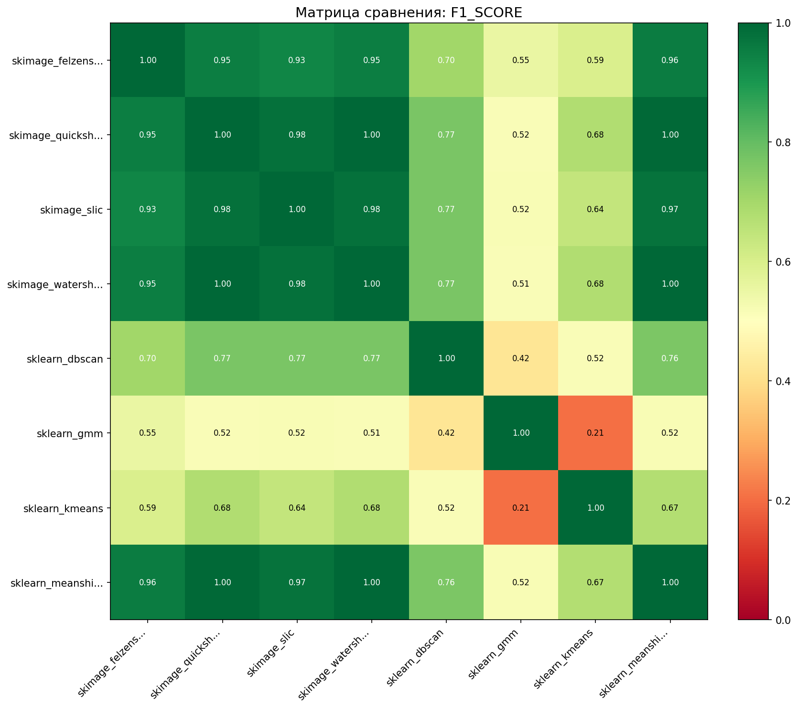
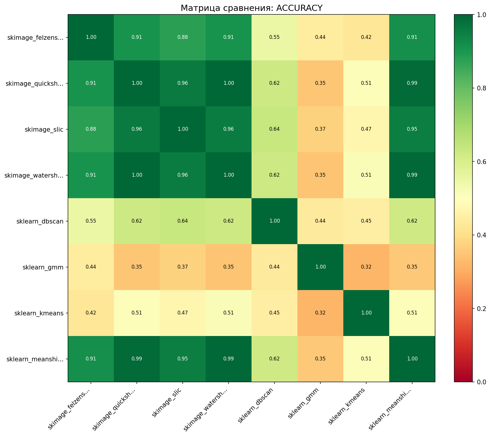
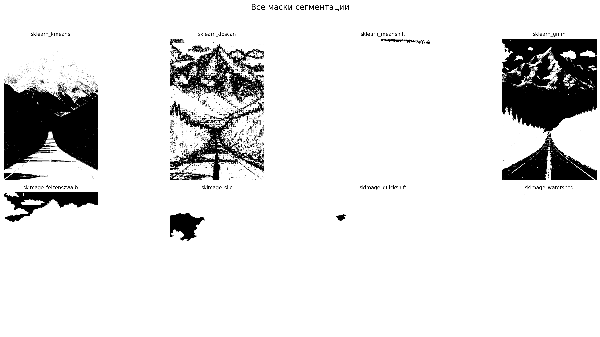

Дата: 2025-12-24 13:22:38
Всего методов: 8
Тип сравнения: pairwise
Референсный метод: Нет (все со всеми)



Сравнение всех со всеми
| Метод | Площадь маски | Покрытие | Время (с) |
|---|---|---|---|
| skimage_watershed | 812,542 | 100.0% | 0.179 |
| skimage_quickshift | 810,166 | 99.7% | 2.780 |
| sklearn_meanshift | 807,407 | 99.4% | 23.691 |
| skimage_slic | 777,130 | 95.6% | 0.421 |
| skimage_felzenszwalb | 738,025 | 90.8% | 0.610 |
| sklearn_dbscan | 507,264 | 62.4% | 0.842 |
| sklearn_kmeans | 418,030 | 51.4% | 0.246 |
| sklearn_gmm | 281,046 | 34.6% | 5.967 |